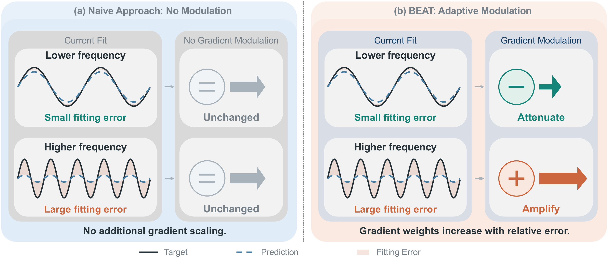
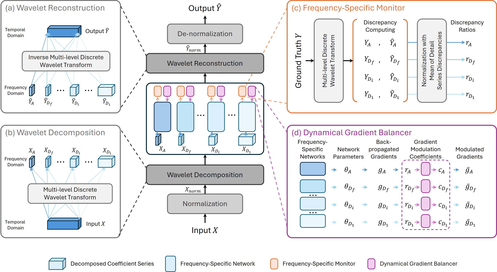

Abstract
Overview
Long-term time-series forecasting supports a wide range of applications, including weather prediction and electricity demand planning. Frequency-domain methods address this task by decomposing observations into components that describe temporal variations at different scales. However, separate representations do not by themselves provide an explicit mechanism for adjusting the training emphasis across components. Under a shared forecasting objective, the frequency-specific networks can retain different levels of coefficient prediction error, motivating an error-dependent adjustment to their gradients. To this end, we propose BEAT (Balanced frEquency Adaptive Tuning), a framework that combines frequency-specific error monitoring with adaptive gradient modulation. We design a Frequency-Specific Monitor that compares predicted and target wavelet coefficients in a common normalized space and expresses each discrepancy relative to a reference error computed from the detail components. We further introduce a Dynamical Gradient Balancer that converts these ratios into positive, bounded coefficients. Components with higher relative errors receive larger gradient weights, whereas those with lower relative errors receive smaller weights. A shared modulation-strength parameter controls the departure from unmodulated training, and the monitoring and balancing operations are used only during training. Experiments on seven real-world datasets show that BEAT achieves competitive performance against state-of-the-art forecasting methods.
01 · Motivation
Error-dependent gradient modulation

02 · Method
The Proposed BEAT Method

Citation
BibTeX
@misc{li2025beat,
title={{BEAT}: Balanced Frequency Adaptive Tuning for Long-Term Time-Series Forecasting},
author={Li, Zhixuan and Chen, Naipeng and Choi, Seonghwa and Lee, Sanghoon and Lin, Weisi},
year={2025},
eprint={2501.19065},
archivePrefix={arXiv},
primaryClass={cs.LG},
url={https://arxiv.org/abs/2501.19065}
}